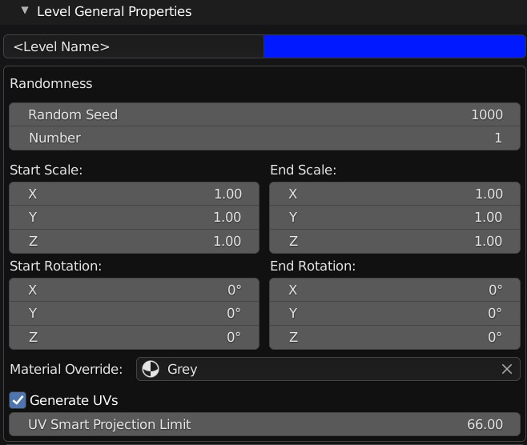

Parameters
Main Controls
Master Seed: This controls the overall randomisation of the generated objects.
Mirror X/Y/Z: Mirror the overall object shape in different directions.
Lattice U/V/W: The add-on creates a deformation “lattice” around the object. You can select this lattice object, move its points, and the overall shape will deform further. These parameters control the number of points in the deformation lattice.
Levels
Level Entry Settings
Levels are similar to layers in Photoshop or Gimp where each layer builds on top of the other. In the Shipwright, objects are first created on the base level and then subsequent levels will randomly scatter objects across the lower levels.
The top level display and controls are:
Level Icon: The icon denoting what type of object this level is using (e.g. Object/Collection/Generated)
Level Color: Change user interface color of the level for managing multiple levels.
Level Name: Name of the level.
Level Seed: The individual random seed value for this level.
Relative Scale: The relative scale for each object in the level.
Subtract Level: Use a Boolean subtract operation to use the objects on this level as boolean cutters.
Level Visibility: Whether the level objects are visible in the scene.
Delete Level: Delete this level entry.
You also have the options to:
Add: Add a new Level.
Copy: Copy a Level and its settings.
Move Up/Down: Move the level positon with the up or down arrows.
By clicking on the level, this will display the specific properties for that level described below.
Level General Properties
These properties apply to any level type.
Randomness
Random Seed: The random seed used to control the randomness of this specific level. This is used in combination with the master seed parameter.
Number: This is the number of objects that are randomly scattered across the surface for this level.
Start/End Scale
This controls the range of different scales for each of the objects created on this level.
Start Scale: This is the minimum range of the scale.
Start Scale: This is the maximum range of the scale.
Start/End Rotation
This controls the range of different rotations for each of the objects created on this level.
Start Rotation: This is the minimum range of the rotation.
Start Rotation: This is the maximum range of the rotation.
Material Override
This will override the default material for the objects on this level.
Generate UVs
This will automatically create UVs for the objects using Blender’s UV Smart Projection feature.
UV Smart Projection Limit: This is used by the UV Smart Projection to determine how much of a bend on the surface will determine a UV island. The default setting is recommended.
Level Types
Each Level has a different type of object you can scatter on the surface. You can choose from:
You can also optionally add a Plating effect to the shape with the Plating Generator add-on.
Custom Objects

You can add your own in-scene objects.
Object: The object you wish to be used when scattering objects onto the levels below.
Collection of Objects
You can also use an in-scene collection of objects the scatter onto the surface.
Collection: The collection of objects to be used for this level when scattering objects onto the surface of the lower levels.
You can sample the objects in two ways:
All: This will use all the objects in the collection and scatter them onto the surface.
Samples: This will use a specified number of objects from the collection specified by the number parameter in the General Parameters section.
Allow Duplicates: When picking objects from the collection, allow for picking the same object more than once.
Generated Objects
This uses the Shape Generator add-on to create randomly created objects across the surface. Each shape will be assigned a unique seed number to make it different.
Generated Object Parameters
Scaling
This controls the scale of each generated object. Useful for creating shapes of a consistent proportion, e.g. tall buildings or long spaceships.
Shape Parameters
Min Extrude Amount: The minimum number of face extrusions within a generated shape.
Max Extrude Amount: The maxmum number of face extrusions within a generated shape.
Min Extrude Length: The minimum length of a face extrusion.
Max Extrude Length: The maximum length of a face extrusion.
Min Taper: The minimum amount of taper for each extrusion. Smaller values will increase the amount of tapering.
Max Taper: The maximum amount of taper for each extrusion. Larger values will decrease the amount of tapering.
Min Rotation: The minimum amount of rotation applied to each extrusion.
Max Rotation: The maximum amount of rotation applied to each extrusion.
Min Slide: The minimum amount of sliding, or sloping, applied to each extrusion.
Max Slide: The maximum amount of sliding, or sloping, applied to each extrusion.
When Choosing a face, favour…
When randomly choosing another face to extrude while creating the object, this will choose the prefered direction of the face that is chosen. For instance, a value of (1,0,0) will only favour a face pointing towards the X direction.
Shape Subdivisions: How many sub-faces a face is divided into.
Bevel Width: The width of the desired bevel effect on the overall generated object’s edges.
Bevel Segments: The number of segments in the bevel effect.
Cast Modifier
This is used to apply a Cast Modifier that will deform the overall shape of the objects being applied.
Cast Amount: The amount of deformation the cast modifier applies.
Cast Type (Sphere/Cylinder/Coboid): This is the type of deformation shape that the cast modifier applies.
Adding Plates
You can optionally add a Plating effect to the objects using the Plating Generator Add-On. Note that faces on the original objects need to be selected and have quad (4-sided) edges.
Plates Random Seed: The random number used to generated different plating patterns.
Plating Amount: The percentage of cuts to make the plate.
Plating Groove Width: The width of the grooves of the plates.
Plating Groove Depth: The depth of the grooves.
Plating Height Random Seed: The random number used to vary the heights of the plates.
Plating Min Height: The minimum height of the plates.
Plating Max Height: The maximum height of the plates.
Plating Face Area: The minimum size of the faces for the plating effect to be applied to.